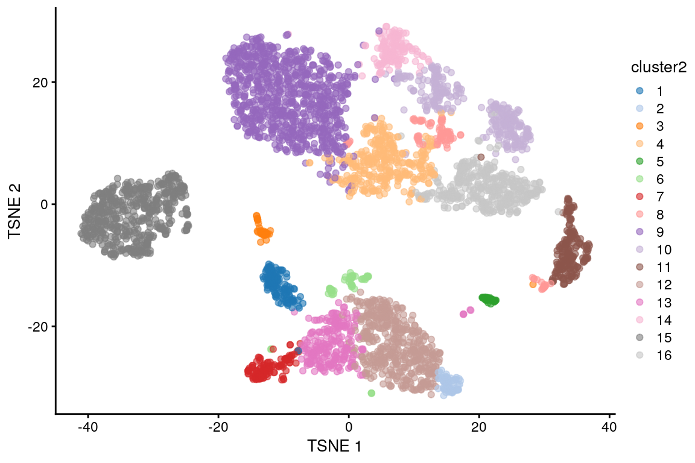
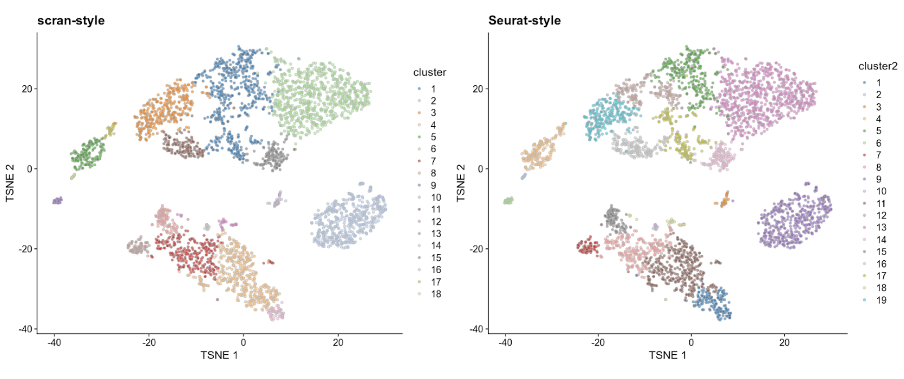
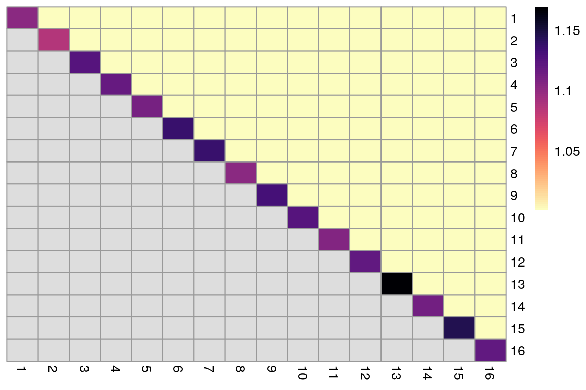

9 Clustering
Instructora: Laura Gómez-Romero
9.1 Diapositivas de Peter Hickey
Ve las diapositivas aquí
9.2 Dataset ilustrativo: 10X PBMC4k no filtrado
library(BiocFileCache)
bfc <- BiocFileCache()
raw.path <- bfcrpath(bfc, file.path(
"http://cf.10xgenomics.com/samples",
"cell-exp/2.1.0/pbmc4k/pbmc4k_raw_gene_bc_matrices.tar.gz"
))
untar(raw.path, exdir = file.path(tempdir(), "pbmc4k"))
library(DropletUtils)
library(Matrix)
fname <- file.path(tempdir(), "pbmc4k/raw_gene_bc_matrices/GRCh38")
sce.pbmc <- read10xCounts(fname, col.names = TRUE)Dataset de células mononucleares de sangre periférica humana (PBMC) de 10X Genomics
Descripción aquí
Zheng, G. X. Y. et al. Massively parallel digital transcriptional profiling of single cells. Nat. Commun. 8, 14049 (2017)
# gene-annotation
library(scater)
rownames(sce.pbmc) <- uniquifyFeatureNames(
rowData(sce.pbmc)$ID, rowData(sce.pbmc)$Symbol
)
library(EnsDb.Hsapiens.v86)
location <- mapIds(EnsDb.Hsapiens.v86,
keys = rowData(sce.pbmc)$ID,
column = "SEQNAME", keytype = "GENEID"
)
# cell-detection
set.seed(100)
e.out <- emptyDrops(counts(sce.pbmc))
sce.pbmc <- sce.pbmc[, which(e.out$FDR <= 0.001)]# quality-control
stats <- perCellQCMetrics(sce.pbmc,
subsets = list(Mito = which(location == "MT"))
)
high.mito <- isOutlier(stats$subsets_Mito_percent,
type = "higher"
)
sce.pbmc <- sce.pbmc[, !high.mito]
# normalization
library(scran)
set.seed(1000)
clusters <- quickCluster(sce.pbmc)
sce.pbmc <- computeSumFactors(sce.pbmc, cluster = clusters)
sce.pbmc <- logNormCounts(sce.pbmc)# variance modelling
set.seed(1001)
dec.pbmc <- modelGeneVarByPoisson(sce.pbmc)
top.pbmc <- getTopHVGs(dec.pbmc, prop = 0.1)# dimensionality-reduction
set.seed(10000)
sce.pbmc <- denoisePCA(sce.pbmc,
subset.row = top.pbmc,
technical = dec.pbmc
)
set.seed(100000)
sce.pbmc <- runTSNE(sce.pbmc, dimred = "PCA")
set.seed(1000000)
sce.pbmc <- runUMAP(sce.pbmc, dimred = "PCA")9.3 Motivación
Clustering es un procedimiento no supervisado par definir grupos de células con perfiles de expresión similares
Su propósito principal es resumir los datos en un formato digerido susceptible a interpretación humana
Nos permite asignar etiquetas (por ejemplo, tipos celulares) a las células
9.4 ¿Por qué no realizamos el clustering sobre las coordenadas de t-SNE/UMAP?
Las técnicas de t-SNE/UMAP han comprimido datos altamente multi-dimensionales en dos dimensiones
Esta compresión inevitablemente ha provocado la perdida de información
Por lo tanto, agrupamos sobre los PCs y después visualizamos las identidades de los clusters en la gráfica t-SNE/UMAP
9.5 ¿Cuál es el verdadero clustering?

Un cluster no implica un tipo celular
Nosotros podemos definir tantos clusters como queramos y podemos utilizar el algoritmo que más nos acomode
El clustering, como un microscopio, simplemente es una herramienta para explorar los datos
Preguntar por el mejor clustering es similar a preguntar cuál es la mejor magnificación en un microscopio sin contenido
9.6 Clustering basado en grafos
9.6.1 Antecedentes
El clustering basado en grafos fue popularizado (más no inventado) por su uso en Seurat
Objetivo: Construir un grafo en el que cada nodo es una célula que está conectada a sus vecinos más cercanos en el espacio multidimensional
9.6.2 Gráfica de los k vecinos más cercanos (k-nearest neighbour -KNN- graph)
Ilustremos como funciona para 20 células


9.6.3 Gráfica de los vecinos más próximos compartidos (SNN)
De una gráfica KNN se puede construir una grafica SNN

Podemos asignar pesos a cada arista del grafo, basándonos en la similaridad de las células involucradas, dándole pesos más altos a células que están más cercanamente relacionadas
9.6.4 Gráfica SNN con pesos en las aristas

9.6.5 Pasando de una gráfica SNN pesada cluster mediante detección de comunidades
A partir de una gráfica SNN pesada podemos aplicar algoritmos para identificar comunidades de células
Comunidades son grupos de células que están más conectadas a células en el mismo grupo que lo que están a células de un grupo diferente
Cada comunidad representa un cluster

9.6.6 Resumen de clustering basado en grafos
- La construcción y búsqueda de una red KNN es rápida, por lo tanto, es escalable para datasets grandes
- Debes evitar obtener conclusiones fuertes acerca de la forma de los clusters o la distribución de células dentro de cada cluster
- Cada célula es conectada con un número mínimo de células vecinas obligatoriamente, esto reduce el riesgo de cluster no informativos con unos pocos outliers
Después de la construcción del grafo, no se almacena información adicional más alla de las células vecinas. Esto puede producir subclusters artificiales en regiones con muchas células
9.7 Implementación
- ¿Cuántas céulas vecinas debo considerar durante la construcción del grafo?
- ¿Cómo debo pesar las aristas?
- ¿Cuál algoritmo de detección de comunidades se debe usar para definir los clusters?
9.8 Clustering basado en grafos
library(scran)
# Build graph using k = 10 nearest neighbours in PCA-space
g <- buildSNNGraph(sce.pbmc, k = 10, use.dimred = "PCA")
# Identify communities using the Walktrap method
clust <- igraph::cluster_walktrap(g)$membership# Visualise clusters on t-SNE plot
library(scater)
sce.pbmc$cluster <- factor(clust)
plotReducedDim(sce.pbmc, "TSNE", colour_by = "cluster")
¿Qué pasa si utilizas una k más grande o más pequeña?
9.8.1 Detalles adicionales del ejemplo previo
- KNNs se basan en la distancia Euclideana entre células
- Las aristas se crean entre todos los pares de células que comparten por lo menos un vecino
- Usa el esquema de peso de: Xu and Su (2015)
9.8.2 Eligiendo un valor de k
El valor de k puede ser toscamente interpretado como el tamaño anticipado de la subpoblación más pequeña
Si una subpoblación tiene menos que (k+1) células entonces el método será forzado a construir aristas entre células de esa subpoblación y células de otras subpoblaciones
Esto incrementa el riesgo de que la subpoblación en cuestión no forme su propio cluster
9.8.3 Estilo Seurat
# Jaccard-based weights followed by Louvain clustering
# aka 'Seurat-style' clustering
g <- buildSNNGraph(sce.pbmc, k = 10, use.dimred = "PCA", type = "jaccard")
clust2 <- igraph::cluster_louvain(g)$membership
sce.pbmc$cluster2 <- factor(clust2)
plotReducedDim(sce.pbmc, "TSNE", colour_by = "cluster2")
9.8.4 Clustering basado en un grafo
Pipelines basados en Seurat:
- Pesos basados en Jacard
- Clustering Louvain
Pipelines basados en Scran:
- Pesos basados en Randos
- Clustering Walktrap
Para detalles sobre la seleccion de parámetros y comparaciones: visitar esta página

9.8.5 Evaluando la separación de los clusters
Modularidad es una métrica natural para evaluar la separación entre comunidades/clusters
Definido como la diferencia (escalada) entre el peso total observado de las aristas entre los nodos en el mismo cluster y el peso total esperado si los pesos fueran distribuidos aleatoriamente entre todos los pares de nodos
Nosotros computaremos un score de modularidad para cada cluster (usando las tasas en vez de las diferencias)
library(bluster)
ratio <- pairwiseModularity(g, clust, as.ratio = TRUE)
dim(ratio)## [1] 16 16library(pheatmap)
pheatmap(log2(ratio + 1),
cluster_rows = FALSE,
cluster_cols = FALSE,
color = colorRampPalette(c("white", "blue"))(100)
)
Un dataset que contiene clusters bien separados debería contener la mayoría del peso total observado en las entradas diagonales, i.e la mayoría de las aristas ocurren entre células del mismo cluster
Para más detalles sobre evaluación de la separación entre clusters visite esta página
9.9 Otros métodos de clustering
Clustering por k-means
- Rápido
- Se debe especificar el número de clusters de antemano
- Favorece clusters esféricos
Clustering jerárquico
- Produce un dendograma (árbol) representando las células y la similaridad entre subpoblaciones a varias resoluciones
- Demasiado lento para correrse en algo más grande que los datasets más pequeños de scRNA-seq
9.10 Evaluando estabilidad de los clusters
Una propiedad deseable de un cluster dado es que éste sea estable a las perturbaciones en los datos de entrada:
- Pequeños cambios al procesamiento no cambiarán el resultado
- Esto incrementa la probabilida de que las conclusiones puedan ser replicadas en un estudio independiente
Uno puede hacer un proceso de bootstrap para evaluar la estabilidad de un algoritmo de clustering en un dataset dado
myClusterFUN <- function(x) {
g <- buildSNNGraph(x, use.dimred = "PCA", type = "jaccard")
igraph::cluster_louvain(g)$membership
}
originals <- myClusterFUN(sce.pbmc)
set.seed(0010010100)
coassign <- bootstrapStability(sce.pbmc,
FUN = myClusterFUN,
clusters = originals
)Coasignación es la probabilidad de que células elegidas al azar del cluster X y Y sean asignadas al mismo cluster en la réplica del proceso de bootstrap
pheatmap(coassign,
cluster_row = FALSE, cluster_col = FALSE,
color = rev(viridis::magma(100))
)
Probabilidad alta de coasignación indica que X no es estable con respecto a su separación de Y. Queremos altas probabilidades de coasignación en la diagonal
Bootstraping solo considera el efecto del ruido de muestreo e ignora otros factores que pueden afectar la reproducinilidad (efectos de batch, variación entre los donadores)
Pobre separación puede ser altamente estable
9.11 Subclustering
Mejora la resolucón al repetir el proceso de feature selection y clustering dentro de un único cluster
Se enfoca en los HGVs y PCs que son los más relevantes para un cluster específico
g.full <- buildSNNGraph(sce.pbmc, use.dimred = "PCA")
clust.full <- igraph::cluster_walktrap(g.full)$membership
sce.pbmc$clust.full <- factor(clust.full)
plotExpression(sce.pbmc,
features = c("CD3E", "CCR7", "CD69", "CD44"),
x = "clust.full", colour_by = "clust.full"
)
CD3E, CCR7, CD69, y CD44 son marcadores de células T de memoria. Dentro de las células T de memoria, ¿dónde están las subpoblaciones CD4+ y CD8+?
# Repeating modelling and PCA on the subset of cells we have
# identified as memory T-cells (cluster 6).
memory <- 6
sce.memory <- sce.pbmc[, clust.full == memory]
dec.memory <- modelGeneVar(sce.memory)
sce.memory <- denoisePCA(sce.memory,
technical = dec.memory,
subset.row = getTopHVGs(dec.memory, prop = 0.1)
)
# Repeating clustering on the subset.
g.memory <- buildSNNGraph(sce.memory, use.dimred = "PCA")
clust.memory <- igraph::cluster_walktrap(g.memory)$membership
sce.memory$clust.memory <- factor(clust.memory)plotExpression(sce.memory,
features = c("CD8A", "CD4"),
x = "clust.memory"
)
Expresión de CD4 es bajo, por lo tanto, su cambio es modesto, pero la interpretación es clara
scran::quickSubCluster() ciclará sobre los clusters y realizará el proceso de subclustering de acuerdo a una función especificada por el usuario. Esto asume que la misma función es apropiada para todos los clusters
Si tipos celulares o estados celulares se extienden sobre las fronteras de los clusters, entonces un subcluster podría representar contaminación de un tipo celular en un cluster separado
9.12 Resumen y recomendaciones
Un cluster no implica un tipo celular
Nosotros podemos definir tantos clusters como queramos y podemos utilizar el algoritmo que más nos acomode
El clustering, como un microscopio, simplemente es una herramienta para explorar los datos
Preguntar por el mejor clustering es similar a preguntar cuál es la mejor magnificación en un microscopio sin contenido
- Clustering basado en grafos es rápido y evita tener que hacer suposiciones fuertes sobre la forma de los clusters o la distribución de las células dentro de cada cluster:
- scran::buildSNNGraph()
- igraph::cluster_walktrap() o igraph::cluster_louvain()
Modularidad y estabilidad de los clusters son diagnósticos útiles
El proceso de subclustering podría mejorar la resolución dentro de clusters grandes
9.13 Donde estamos

9.14 Detalles de la sesión de R
## Información de la sesión de R
Sys.time()## [1] "2021-08-08 18:00:45 UTC"proc.time()## user system elapsed
## 214.998 5.111 216.878options(width = 120)
sessioninfo::session_info()## ─ Session info ───────────────────────────────────────────────────────────────────────────────────────────────────────
## setting value
## version R version 4.1.0 (2021-05-18)
## os Ubuntu 20.04.2 LTS
## system x86_64, linux-gnu
## ui X11
## language (EN)
## collate en_US.UTF-8
## ctype en_US.UTF-8
## tz UTC
## date 2021-08-08
##
## ─ Packages ───────────────────────────────────────────────────────────────────────────────────────────────────────────
## package * version date lib source
## AnnotationDbi * 1.54.1 2021-06-08 [1] Bioconductor
## AnnotationFilter * 1.16.0 2021-05-19 [1] Bioconductor
## assertthat 0.2.1 2019-03-21 [1] RSPM (R 4.1.0)
## beachmat 2.8.0 2021-05-19 [1] Bioconductor
## beeswarm 0.4.0 2021-06-01 [1] RSPM (R 4.1.0)
## Biobase * 2.52.0 2021-05-19 [1] Bioconductor
## BiocFileCache * 2.0.0 2021-05-19 [1] Bioconductor
## BiocGenerics * 0.38.0 2021-05-19 [1] Bioconductor
## BiocIO 1.2.0 2021-05-19 [1] Bioconductor
## BiocNeighbors 1.10.0 2021-05-19 [1] Bioconductor
## BiocParallel 1.26.1 2021-07-04 [1] Bioconductor
## BiocSingular 1.8.1 2021-06-08 [1] Bioconductor
## biomaRt 2.48.2 2021-07-01 [1] Bioconductor
## Biostrings 2.60.2 2021-08-05 [1] Bioconductor
## bit 4.0.4 2020-08-04 [1] RSPM (R 4.1.0)
## bit64 4.0.5 2020-08-30 [1] RSPM (R 4.1.0)
## bitops 1.0-7 2021-04-24 [1] RSPM (R 4.1.0)
## blob 1.2.2 2021-07-23 [1] RSPM (R 4.1.0)
## bluster * 1.2.1 2021-05-27 [1] Bioconductor
## bookdown 0.22 2021-04-22 [1] RSPM (R 4.1.0)
## bslib 0.2.5.1 2021-05-18 [1] RSPM (R 4.1.0)
## cachem 1.0.5 2021-05-15 [2] RSPM (R 4.1.0)
## cli 3.0.1 2021-07-17 [2] RSPM (R 4.1.0)
## cluster 2.1.2 2021-04-17 [3] CRAN (R 4.1.0)
## colorspace 2.0-2 2021-06-24 [1] RSPM (R 4.1.0)
## cowplot 1.1.1 2020-12-30 [1] RSPM (R 4.1.0)
## crayon 1.4.1 2021-02-08 [2] RSPM (R 4.1.0)
## curl 4.3.2 2021-06-23 [2] RSPM (R 4.1.0)
## DBI 1.1.1 2021-01-15 [1] RSPM (R 4.1.0)
## dbplyr * 2.1.1 2021-04-06 [1] RSPM (R 4.1.0)
## DelayedArray 0.18.0 2021-05-19 [1] Bioconductor
## DelayedMatrixStats 1.14.1 2021-08-05 [1] Bioconductor
## digest 0.6.27 2020-10-24 [2] RSPM (R 4.1.0)
## dplyr 1.0.7 2021-06-18 [1] RSPM (R 4.1.0)
## dqrng 0.3.0 2021-05-01 [1] RSPM (R 4.1.0)
## DropletUtils * 1.12.2 2021-07-22 [1] Bioconductor
## edgeR 3.34.0 2021-05-19 [1] Bioconductor
## ellipsis 0.3.2 2021-04-29 [2] RSPM (R 4.1.0)
## EnsDb.Hsapiens.v86 * 2.99.0 2021-07-29 [1] Bioconductor
## ensembldb * 2.16.4 2021-08-05 [1] Bioconductor
## evaluate 0.14 2019-05-28 [2] RSPM (R 4.1.0)
## fansi 0.5.0 2021-05-25 [2] RSPM (R 4.1.0)
## farver 2.1.0 2021-02-28 [1] RSPM (R 4.1.0)
## fastmap 1.1.0 2021-01-25 [2] RSPM (R 4.1.0)
## filelock 1.0.2 2018-10-05 [1] RSPM (R 4.1.0)
## FNN 1.1.3 2019-02-15 [1] RSPM (R 4.1.0)
## generics 0.1.0 2020-10-31 [1] RSPM (R 4.1.0)
## GenomeInfoDb * 1.28.1 2021-07-01 [1] Bioconductor
## GenomeInfoDbData 1.2.6 2021-07-29 [1] Bioconductor
## GenomicAlignments 1.28.0 2021-05-19 [1] Bioconductor
## GenomicFeatures * 1.44.0 2021-05-19 [1] Bioconductor
## GenomicRanges * 1.44.0 2021-05-19 [1] Bioconductor
## ggbeeswarm 0.6.0 2017-08-07 [1] RSPM (R 4.1.0)
## ggplot2 * 3.3.5 2021-06-25 [1] RSPM (R 4.1.0)
## glue 1.4.2 2020-08-27 [2] RSPM (R 4.1.0)
## gridExtra 2.3 2017-09-09 [1] RSPM (R 4.1.0)
## gtable 0.3.0 2019-03-25 [1] RSPM (R 4.1.0)
## HDF5Array 1.20.0 2021-05-19 [1] Bioconductor
## highr 0.9 2021-04-16 [2] RSPM (R 4.1.0)
## hms 1.1.0 2021-05-17 [1] RSPM (R 4.1.0)
## htmltools 0.5.1.1 2021-01-22 [1] RSPM (R 4.1.0)
## httr 1.4.2 2020-07-20 [2] RSPM (R 4.1.0)
## igraph 1.2.6 2020-10-06 [1] RSPM (R 4.1.0)
## IRanges * 2.26.0 2021-05-19 [1] Bioconductor
## irlba 2.3.3 2019-02-05 [1] RSPM (R 4.1.0)
## jquerylib 0.1.4 2021-04-26 [1] RSPM (R 4.1.0)
## jsonlite 1.7.2 2020-12-09 [2] RSPM (R 4.1.0)
## KEGGREST 1.32.0 2021-05-19 [1] Bioconductor
## knitr 1.33 2021-04-24 [2] RSPM (R 4.1.0)
## labeling 0.4.2 2020-10-20 [1] RSPM (R 4.1.0)
## lattice 0.20-44 2021-05-02 [3] CRAN (R 4.1.0)
## lazyeval 0.2.2 2019-03-15 [1] RSPM (R 4.1.0)
## lifecycle 1.0.0 2021-02-15 [2] RSPM (R 4.1.0)
## limma 3.48.1 2021-06-24 [1] Bioconductor
## locfit 1.5-9.4 2020-03-25 [1] RSPM (R 4.1.0)
## magrittr 2.0.1 2020-11-17 [2] RSPM (R 4.1.0)
## Matrix * 1.3-4 2021-06-01 [3] RSPM (R 4.1.0)
## MatrixGenerics * 1.4.1 2021-08-03 [1] Bioconductor
## matrixStats * 0.60.0 2021-07-26 [1] RSPM (R 4.1.0)
## memoise 2.0.0 2021-01-26 [2] RSPM (R 4.1.0)
## metapod 1.0.0 2021-05-19 [1] Bioconductor
## munsell 0.5.0 2018-06-12 [1] RSPM (R 4.1.0)
## pheatmap * 1.0.12 2019-01-04 [1] RSPM (R 4.1.0)
## pillar 1.6.2 2021-07-29 [2] RSPM (R 4.1.0)
## pkgconfig 2.0.3 2019-09-22 [2] RSPM (R 4.1.0)
## png 0.1-7 2013-12-03 [1] RSPM (R 4.1.0)
## prettyunits 1.1.1 2020-01-24 [2] RSPM (R 4.1.0)
## progress 1.2.2 2019-05-16 [1] RSPM (R 4.1.0)
## ProtGenerics 1.24.0 2021-05-19 [1] Bioconductor
## purrr 0.3.4 2020-04-17 [2] RSPM (R 4.1.0)
## R.methodsS3 1.8.1 2020-08-26 [1] RSPM (R 4.1.0)
## R.oo 1.24.0 2020-08-26 [1] RSPM (R 4.1.0)
## R.utils 2.10.1 2020-08-26 [1] RSPM (R 4.1.0)
## R6 2.5.0 2020-10-28 [2] RSPM (R 4.1.0)
## rappdirs 0.3.3 2021-01-31 [2] RSPM (R 4.1.0)
## RColorBrewer 1.1-2 2014-12-07 [1] RSPM (R 4.1.0)
## Rcpp 1.0.7 2021-07-07 [2] RSPM (R 4.1.0)
## RCurl 1.98-1.3 2021-03-16 [1] RSPM (R 4.1.0)
## restfulr 0.0.13 2017-08-06 [1] RSPM (R 4.1.0)
## rhdf5 2.36.0 2021-05-19 [1] Bioconductor
## rhdf5filters 1.4.0 2021-05-19 [1] Bioconductor
## Rhdf5lib 1.14.2 2021-07-06 [1] Bioconductor
## rjson 0.2.20 2018-06-08 [1] RSPM (R 4.1.0)
## rlang 0.4.11 2021-04-30 [2] RSPM (R 4.1.0)
## rmarkdown 2.9 2021-06-15 [1] RSPM (R 4.1.0)
## Rsamtools 2.8.0 2021-05-19 [1] Bioconductor
## RSpectra 0.16-0 2019-12-01 [1] RSPM (R 4.1.0)
## RSQLite 2.2.7 2021-04-22 [1] RSPM (R 4.1.0)
## rsvd 1.0.5 2021-04-16 [1] RSPM (R 4.1.0)
## rtracklayer 1.52.0 2021-05-19 [1] Bioconductor
## Rtsne 0.15 2018-11-10 [1] RSPM (R 4.1.0)
## S4Vectors * 0.30.0 2021-05-19 [1] Bioconductor
## sass 0.4.0 2021-05-12 [1] RSPM (R 4.1.0)
## ScaledMatrix 1.0.0 2021-05-19 [1] Bioconductor
## scales 1.1.1 2020-05-11 [1] RSPM (R 4.1.0)
## scater * 1.20.1 2021-06-15 [1] Bioconductor
## scran * 1.20.1 2021-05-24 [1] Bioconductor
## scuttle * 1.2.1 2021-08-05 [1] Bioconductor
## sessioninfo 1.1.1 2018-11-05 [2] RSPM (R 4.1.0)
## SingleCellExperiment * 1.14.1 2021-05-21 [1] Bioconductor
## sparseMatrixStats 1.4.0 2021-05-19 [1] Bioconductor
## statmod 1.4.36 2021-05-10 [1] RSPM (R 4.1.0)
## stringi 1.7.3 2021-07-16 [2] RSPM (R 4.1.0)
## stringr 1.4.0 2019-02-10 [2] RSPM (R 4.1.0)
## SummarizedExperiment * 1.22.0 2021-05-19 [1] Bioconductor
## tibble 3.1.3 2021-07-23 [2] RSPM (R 4.1.0)
## tidyselect 1.1.1 2021-04-30 [1] RSPM (R 4.1.0)
## utf8 1.2.2 2021-07-24 [2] RSPM (R 4.1.0)
## uwot 0.1.10 2020-12-15 [1] RSPM (R 4.1.0)
## vctrs 0.3.8 2021-04-29 [2] RSPM (R 4.1.0)
## vipor 0.4.5 2017-03-22 [1] RSPM (R 4.1.0)
## viridis 0.6.1 2021-05-11 [1] RSPM (R 4.1.0)
## viridisLite 0.4.0 2021-04-13 [1] RSPM (R 4.1.0)
## withr 2.4.2 2021-04-18 [2] RSPM (R 4.1.0)
## xfun 0.24 2021-06-15 [2] RSPM (R 4.1.0)
## XML 3.99-0.6 2021-03-16 [1] RSPM (R 4.1.0)
## xml2 1.3.2 2020-04-23 [2] RSPM (R 4.1.0)
## XVector 0.32.0 2021-05-19 [1] Bioconductor
## yaml 2.2.1 2020-02-01 [2] RSPM (R 4.1.0)
## zlibbioc 1.38.0 2021-05-19 [1] Bioconductor
##
## [1] /__w/_temp/Library
## [2] /usr/local/lib/R/site-library
## [3] /usr/local/lib/R/libraryPatrocinadores
Agradecemos a nuestros patrocinadores: